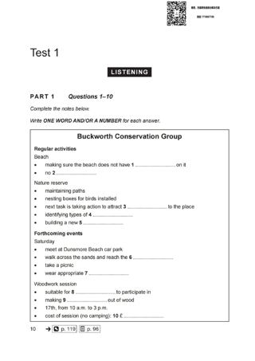
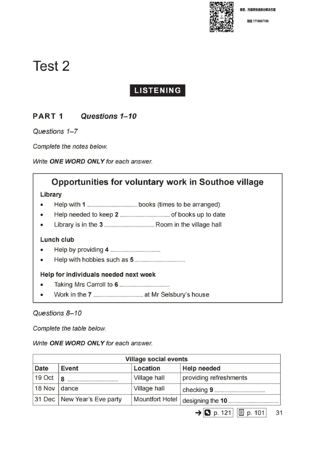
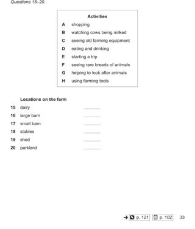
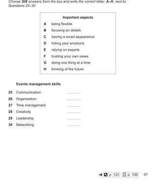

Listening visuals Cambridge 17Reviewed results: 122 confirmed issue records (86 duplicate pairs, 9 sequence inversions, 1 wrong-Part image, 26 clipped images); 23 suspected records. Counts overlap Parts/assets. Full reviewed CSV. Raw audit.json/findings.csv are detector output, not the final defect list. Fallback scope alone is not a defect. OCR ranges are incomplete hints.
All books · Cambridge 17: 16 Parts · exact current resolver outputCambridge 17 / Test 1 / Part 1
No confirmed/candidate defect detected; not a visual PASS
Q[1, 10]: 1, 2 [Part fallback]
 #1 OCR Q[[1, 10]] · 1447×1707
#1 OCR Q[[1, 10]] · 1447×1707
Test_1_Part_1_Conservation_Group_Notes.jpg
assets/public/a279b2ac20ef018b64caed0fabe95623acf348824b3492f317dcf9429905d766.jpg
asset-a279b2ac20ef018b64caed0fabe95623acf348824b3492f317dcf9429905d766
#2 OCR Q[[1, 10]] · 1654×2339
Test_1_Part_1_PDF_Page_003.jpg
assets/public/fb0071652ac01e1a60a71f5661d28b4abe758855c5527a811e74c6daa9a9b38d.jpg
asset-fb0071652ac01e1a60a71f5661d28b4abe758855c5527a811e74c6daa9a9b38dCambridge 17 / Test 1 / Part 2
No confirmed/candidate defect detected; not a visual PASS
Q[11, 14]: 1, 2 [Part fallback]
Q[15, 16]: 1, 2 [Part fallback]
Q[17, 18]: 1, 2 [Part fallback]
Q[19, 20]: 1, 2 [Part fallback]
 #1 OCR Q[[11, 20], [11, 14]] · 1654×2339
#1 OCR Q[[11, 20], [11, 14]] · 1654×2339
Test_1_Part_2_PDF_Page_004.jpg
assets/public/9f7a2bd28f0497c4fbf3eb87bb305a76fe98feaaa0a71a7566d823a2219d3671.jpg
asset-9f7a2bd28f0497c4fbf3eb87bb305a76fe98feaaa0a71a7566d823a2219d3671 #2 OCR Q[] · 1654×2339
#2 OCR Q[] · 1654×2339
Test_1_Part_2_PDF_Page_005.jpg
assets/public/ea57749f770979b23f342a00387e1a6747c4bf88e3c4abc139fa905087d1cdc5.jpg
asset-ea57749f770979b23f342a00387e1a6747c4bf88e3c4abc139fa905087d1cdc5Cambridge 17 / Test 1 / Part 3
No confirmed/candidate defect detected; not a visual PASS
Q[21, 26]: 1, 2 [Part fallback]
Q[27, 30]: 1, 2 [Part fallback]
 #1 OCR Q[[21, 30], [21, 26]] · 1654×2339
#1 OCR Q[[21, 30], [21, 26]] · 1654×2339
Test_1_Part_3_PDF_Page_006.jpg
assets/public/6221a727605f4c32b692a1de2e18035ee2e5aa4dd5ff7c16be6366396a62b196.jpg
asset-6221a727605f4c32b692a1de2e18035ee2e5aa4dd5ff7c16be6366396a62b196 #2 OCR Q[[27, 30], [27, 30]] · 1654×2339
#2 OCR Q[[27, 30], [27, 30]] · 1654×2339
Test_1_Part_3_PDF_Page_007.jpg
assets/public/881ad4c66ef552591ab22aa10160a20e1194df716d3a1dac4e52075f46ab1542.jpg
asset-881ad4c66ef552591ab22aa10160a20e1194df716d3a1dac4e52075f46ab1542Cambridge 17 / Test 1 / Part 4
No confirmed/candidate defect detected; not a visual PASS
Q[31, 40]: 1 [Part fallback]
 #1 OCR Q[[31, 40]] · 1654×2339
#1 OCR Q[[31, 40]] · 1654×2339
Test_1_Part_4_PDF_Page_008.jpg
assets/public/d5a4da4802bfbfb983de1c30a9e06cf53d0ac8500e6dbfce2a11e2b59aab70f8.jpg
asset-d5a4da4802bfbfb983de1c30a9e06cf53d0ac8500e6dbfce2a11e2b59aab70f8Cambridge 17 / Test 2 / Part 1
No confirmed/candidate defect detected; not a visual PASS
Q[1, 7]: 1, 2 [Part fallback]
Q[8, 10]: 1, 2

#1 OCR Q[[1, 10], [1, 7], [8, 10]] · 1654×2339
Test_2_Part_1_PDF_Page_024.jpg
assets/public/6ab7650ed2d00348cade12e5512031b5429c82d8612b483c32656225497c4d0d.jpg
asset-6ab7650ed2d00348cade12e5512031b5429c82d8612b483c32656225497c4d0d #2 OCR Q[[1, 10], [1, 7], [8, 10]] · 1447×1707
#2 OCR Q[[1, 10], [1, 7], [8, 10]] · 1447×1707
Test_2_Part_1_Village_Social_Events_Table.jpg
assets/public/f99e9607693ec5d8f033a5554aed0c79cf9c1698dd53c48c4ad9d2083be1441b.jpg
asset-f99e9607693ec5d8f033a5554aed0c79cf9c1698dd53c48c4ad9d2083be1441bCambridge 17 / Test 2 / Part 2
V0367:confirmed:order_inversion
Q[11, 14]: 1, 2, 3 [Part fallback]
Q[15, 20]: 1, 2, 3 [Part fallback]

#1 OCR Q[[15, 20]] · 1447×1707
Test_2_Part_2_Oniton_Hall_Activities.jpg
assets/public/38243ee7569993096d59f0417760aa00518ee78ab995933e5087e9f20dcb69e1.jpg
asset-38243ee7569993096d59f0417760aa00518ee78ab995933e5087e9f20dcb69e1 #2 OCR Q[[11, 20], [11, 14]] · 1654×2339
#2 OCR Q[[11, 20], [11, 14]] · 1654×2339
Test_2_Part_2_PDF_Page_025.jpg
assets/public/6f16167250074f9a1203a9b7ae38ebb8b369f5059de0fdf8d0a09d82cf7e97b6.jpg
asset-6f16167250074f9a1203a9b7ae38ebb8b369f5059de0fdf8d0a09d82cf7e97b6 #3 OCR Q[[15, 20], [15, 20]] · 1654×2339
#3 OCR Q[[15, 20], [15, 20]] · 1654×2339
Test_2_Part_2_PDF_Page_026.jpg
assets/public/b3c98b31ca1d8fed8fe9d7c9b67429fc71b03576257e6df8b64d2c03f7fa8491.jpg
asset-b3c98b31ca1d8fed8fe9d7c9b67429fc71b03576257e6df8b64d2c03f7fa8491Cambridge 17 / Test 2 / Part 3
No confirmed/candidate defect detected; not a visual PASS
Q[21, 22]: 1, 2 [Part fallback]
Q[23, 27]: 1, 2 [Part fallback]
Q[28, 30]: 1, 2 [Part fallback]
 #1 OCR Q[[21, 30], [23, 27], [23, 27]] · 1654×2339
#1 OCR Q[[21, 30], [23, 27], [23, 27]] · 1654×2339
Test_2_Part_3_PDF_Page_027.jpg
assets/public/e99db5f3ad668885b92e35220805da4dd79248c7cbd4ac8ba2c03f799dc9990e.jpg
asset-e99db5f3ad668885b92e35220805da4dd79248c7cbd4ac8ba2c03f799dc9990e #2 OCR Q[[28, 30]] · 1654×2339
#2 OCR Q[[28, 30]] · 1654×2339
Test_2_Part_3_PDF_Page_028.jpg
assets/public/503ab8a2b5483afe3f6ccb2f3e1c734a38b73483a6c1b366490aa0afe38ce251.jpg
asset-503ab8a2b5483afe3f6ccb2f3e1c734a38b73483a6c1b366490aa0afe38ce251Cambridge 17 / Test 2 / Part 4
No confirmed/candidate defect detected; not a visual PASS
Q[31, 40]: 1 [Part fallback]
 #1 OCR Q[[31, 40]] · 1654×2339
#1 OCR Q[[31, 40]] · 1654×2339
Test_2_Part_4_PDF_Page_029.jpg
assets/public/e93c558fc6c15fc0f1d34df95a34c07c43bd88e3ad34e7c407acdfbefa81f24c.jpg
asset-e93c558fc6c15fc0f1d34df95a34c07c43bd88e3ad34e7c407acdfbefa81f24cCambridge 17 / Test 3 / Part 1
No confirmed/candidate defect detected; not a visual PASS
Q[1, 10]: 1 [Part fallback]
 #1 OCR Q[[1, 10]] · 1654×2339
#1 OCR Q[[1, 10]] · 1654×2339
Test_3_Part_1_PDF_Page_046.jpg
assets/public/c42d2a1f55250749695078177e2cad36576cf8616bd5bc1846444a5d509755a6.jpg
asset-c42d2a1f55250749695078177e2cad36576cf8616bd5bc1846444a5d509755a6Cambridge 17 / Test 3 / Part 2
No confirmed/candidate defect detected; not a visual PASS
Q[11, 12]: 1, 2 [Part fallback]
Q[13, 15]: 1, 2 [Part fallback]
Q[16, 20]: 1, 2 [Part fallback]
 #1 OCR Q[[11, 20], [13, 15]] · 1654×2339
#1 OCR Q[[11, 20], [13, 15]] · 1654×2339
Test_3_Part_2_PDF_Page_047.jpg
assets/public/5f26ad8511f540c0b05481be33ffb182190d2579aa1a923521af3dea99f3dbbc.jpg
asset-5f26ad8511f540c0b05481be33ffb182190d2579aa1a923521af3dea99f3dbbc #2 OCR Q[[16, 20], [16, 20]] · 1654×2339
#2 OCR Q[[16, 20], [16, 20]] · 1654×2339
Test_3_Part_2_PDF_Page_048.jpg
assets/public/f7d14666fbcc34816b9bda3dfa6962c6c4587c0ce468303d70ceecc43940a932.jpg
asset-f7d14666fbcc34816b9bda3dfa6962c6c4587c0ce468303d70ceecc43940a932Cambridge 17 / Test 3 / Part 3
V0378:confirmed:order_inversion
Q[21, 24]: 1, 2, 3 [Part fallback]
Q[25, 30]: 1, 2, 3 [Part fallback]

#1 OCR Q[[25, 30]] · 1447×1707
Test_3_Part_3_Events_Management_Skills.jpg
assets/public/78f9d5eff219b36110207c3f594b01838029b18ebe66b3d4e2af783126b52a41.jpg
asset-78f9d5eff219b36110207c3f594b01838029b18ebe66b3d4e2af783126b52a41 #2 OCR Q[[21, 30], [21, 24]] · 1654×2339
#2 OCR Q[[21, 30], [21, 24]] · 1654×2339
Test_3_Part_3_PDF_Page_049.jpg
assets/public/80c04048d9f9a9995449ed4feb3d91a1d7d1d5a7f88872a559a50043c36426b3.jpg
asset-80c04048d9f9a9995449ed4feb3d91a1d7d1d5a7f88872a559a50043c36426b3 #3 OCR Q[[25, 30], [25, 30]] · 1654×2339
#3 OCR Q[[25, 30], [25, 30]] · 1654×2339
Test_3_Part_3_PDF_Page_050.jpg
assets/public/c8135ec823907d076305f65c7214148be996be262cb41ca6fe04cbb09de74506.jpg
asset-c8135ec823907d076305f65c7214148be996be262cb41ca6fe04cbb09de74506Cambridge 17 / Test 3 / Part 4
No confirmed/candidate defect detected; not a visual PASS
Q[31, 40]: 1 [Part fallback]
 #1 OCR Q[[31, 40]] · 1654×2339
#1 OCR Q[[31, 40]] · 1654×2339
Test_3_Part_4_PDF_Page_051.jpg
assets/public/3fb34cd7d3657bf9cf21ac6fdcefbbd4f9db4ea3d197a1b2179485e3a4017ea9.jpg
asset-3fb34cd7d3657bf9cf21ac6fdcefbbd4f9db4ea3d197a1b2179485e3a4017ea9Cambridge 17 / Test 4 / Part 1
No confirmed/candidate defect detected; not a visual PASS
Q[1, 10]: 1, 2 [Part fallback]
 #1 OCR Q[[1, 10]] · 1447×1707
#1 OCR Q[[1, 10]] · 1447×1707
Test_4_Part_1_Cleaning_Service_Notes.jpg
assets/public/c10637da15fdb276fa07cd07f18863edd63f3cca4edc0993beb05a52c2104661.jpg
asset-c10637da15fdb276fa07cd07f18863edd63f3cca4edc0993beb05a52c2104661#2 OCR Q[[1, 10]] · 1654×2339
Test_4_Part_1_PDF_Page_068.jpg
assets/public/92cf8badeb8908af158925d90345ec4880dec4bb5c8e775830f56f629b76ae4a.jpg
asset-92cf8badeb8908af158925d90345ec4880dec4bb5c8e775830f56f629b76ae4aCambridge 17 / Test 4 / Part 2
No confirmed/candidate defect detected; not a visual PASS
Q[11, 14]: 1, 2 [Part fallback]
Q[15, 20]: 1, 2 [Part fallback]
 #1 OCR Q[[11, 20], [11, 14]] · 1654×2339
#1 OCR Q[[11, 20], [11, 14]] · 1654×2339
Test_4_Part_2_PDF_Page_069.jpg
assets/public/b9ff1ee656f3d3d396acab9947b0a469cede3e80d6d32a59fcbb5f5441b56544.jpg
asset-b9ff1ee656f3d3d396acab9947b0a469cede3e80d6d32a59fcbb5f5441b56544 #2 OCR Q[[15, 20], [15, 20]] · 1654×2339
#2 OCR Q[[15, 20], [15, 20]] · 1654×2339
Test_4_Part_2_PDF_Page_070.jpg
assets/public/3a0cc99f8ae28547523be4a3eea2be4e7cd231176137142753da3dddf1bef0c3.jpg
asset-3a0cc99f8ae28547523be4a3eea2be4e7cd231176137142753da3dddf1bef0c3Cambridge 17 / Test 4 / Part 3
No confirmed/candidate defect detected; not a visual PASS
Q[21, 22]: 1, 2 [Part fallback]
Q[23, 24]: 1, 2 [Part fallback]
Q[25, 30]: 1, 2 [Part fallback]
 #1 OCR Q[[21, 30], [21, 22]] · 1654×2339
#1 OCR Q[[21, 30], [21, 22]] · 1654×2339
Test_4_Part_3_PDF_Page_071.jpg
assets/public/ed536e378de56457f82c7ab713e7d004a7ed7c7bfcb956cb8375e6edd6b60505.jpg
asset-ed536e378de56457f82c7ab713e7d004a7ed7c7bfcb956cb8375e6edd6b60505 #2 OCR Q[[25, 30], [25, 30]] · 1654×2339
#2 OCR Q[[25, 30], [25, 30]] · 1654×2339
Test_4_Part_3_PDF_Page_072.jpg
assets/public/29506feec8c2e460c6cff382d1427fcff12d51f4cf203f04d944ac663ffc48d1.jpg
asset-29506feec8c2e460c6cff382d1427fcff12d51f4cf203f04d944ac663ffc48d1Cambridge 17 / Test 4 / Part 4
No confirmed/candidate defect detected; not a visual PASS
Q[31, 40]: 1, 2 [Part fallback]
#1 OCR Q[] · 1447×1707
Test_4_Part_4_Maple_Syrup_Notes.jpg
assets/public/2e4f9ddf92f74fc7ed91d407d654e13222da9f80ad7c96245ad96b9ffe6143a0.jpg
asset-2e4f9ddf92f74fc7ed91d407d654e13222da9f80ad7c96245ad96b9ffe6143a0 #2 OCR Q[[31, 40]] · 1654×2339
#2 OCR Q[[31, 40]] · 1654×2339
Test_4_Part_4_PDF_Page_073.jpg
assets/public/ddc12cf695ef464f5b0351f35609e7f3ac9b800152243fe601dc2d8d015cb113.jpg
asset-ddc12cf695ef464f5b0351f35609e7f3ac9b800152243fe601dc2d8d015cb113